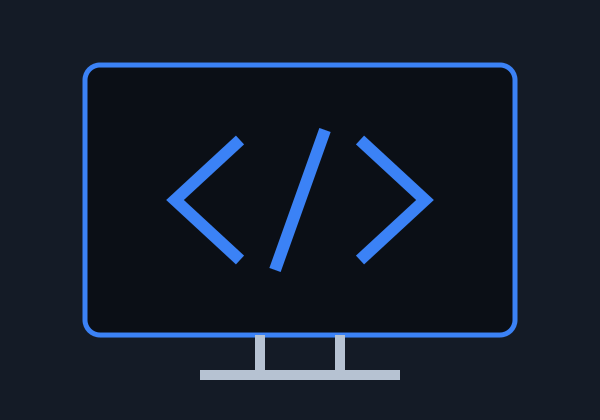

Tecnología
Aprender Java y explorar temas de ciberseguridad.
Estudiante de software, apasionado por la tecnología y el aprendizaje.
Conoce mi historia
Mi nombre es Miguel Ángel Velázquez Zamilpa y estudio software en la UTL. Soy alguien apasionado por la tecnología y me considero una persona disciplinada. Me gustaría lograr todos mis objetivos personales.
Disfruto aprender por mi cuenta, principalmente cosas de tecnología. Me interesa Java y la ciberseguridad. También me encanta hacer ejercicio y leer libros de psicología. La constancia es importante para mí.
Aprender Java y explorar temas de ciberseguridad.
Entrenar y mantener mi disciplina. Mi ejercicio favorito es el press de banca.
Leer sobre psicología y hábitos. Uno de mis libros favoritos es Hábitos atómicos.